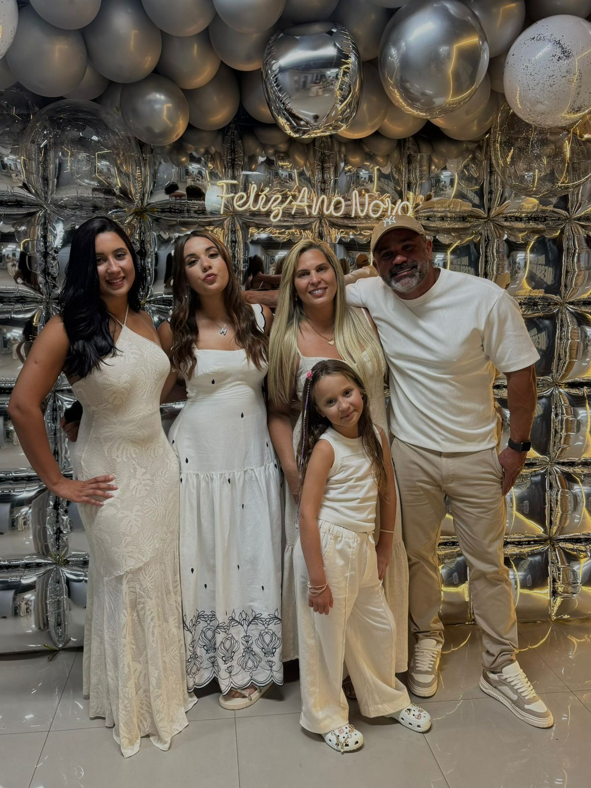
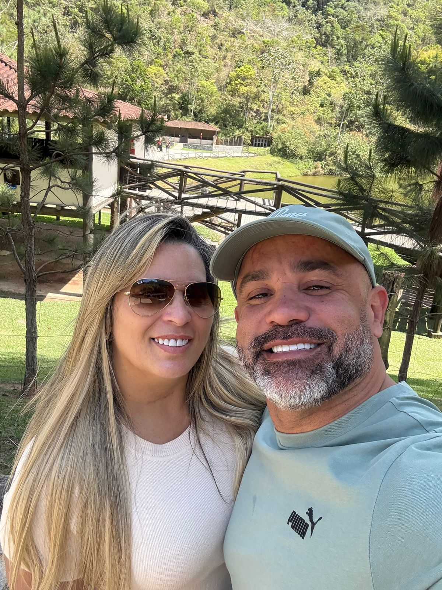
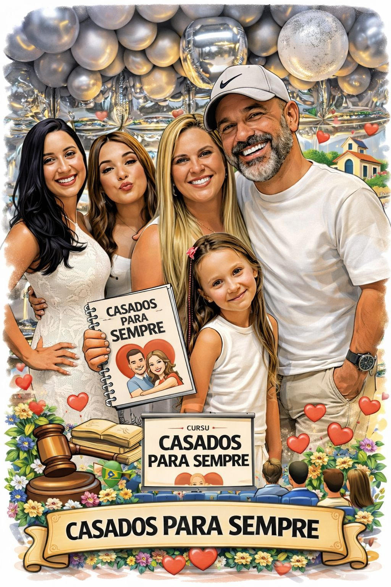
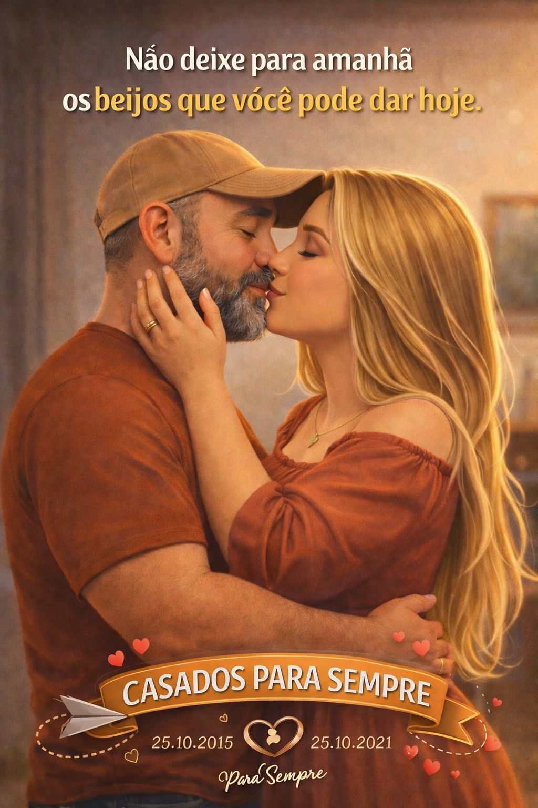

Pastor presidente
Pr. Rogério Barros
Liderança sênior e cobertura espiritual do Programa Casados Para Sempre na ADMAV.

Um ministério para casais que querem voltar ao centro da aliança: fé, presença, honra e reconstrução diária. Uma experiência pastoral com linguagem contemporânea, estética sofisticada e fundamentos bíblicos.
O Casados Para Sempre foi desenhado com uma leitura pastoral prática, inspirada por modelos americanos de marriage ministry: encontros objetivos, conversas guiadas, mentoria de casais, pequenos grupos e momentos intencionais para reacender o vínculo.
Aqui, romantismo não substitui maturidade. A aliança é tratada com beleza, verdade e responsabilidade espiritual.
A Palavra direciona decisões, cura feridas e devolve o casamento ao desenho de Deus.
Casais são conduzidos com escuta, oração, sigilo e acompanhamento responsável.
Conversas difíceis ganham método, graça e um ambiente seguro para recomeçar.
Quando pai e mãe se reposicionam, a casa inteira sente o reflexo da cura.
Temas diretos sobre aliança, perdão, intimidade, finanças, rotina e propósito.
Comunidade de casais com conversa honesta, prestação de contas e amizade madura.
Momentos pensados para o casal voltar a se olhar, celebrar e construir memória.
Direção pastoral para que a transformação não termine no encontro, mas chegue em casa.


A liderança do Casados Para Sempre está nas mãos de Fábio e Michelle, com uma condução próxima, pastoral e sensível à realidade de cada casa. Eles assumem o programa como um chamado para fortalecer alianças e reposicionar famílias.
A proposta é direta: menos aparência, mais verdade; menos distância, mais presença; menos improviso, mais intencionalidade no amor.
O programa caminha debaixo da visão e cobertura dos pastores presidentes da ADMAV, Pr. Rogério Barros e Pra. Amanda Barros.
Liderança sênior e cobertura espiritual do Programa Casados Para Sempre na ADMAV.
Presença pastoral na visão da igreja e na edificação das famílias da ADMAV.
As imagens do programa foram usadas como linguagem principal da página: família, celebração e proximidade.

O vídeo do programa entra como peça central de apresentação, reforçando a identidade visual do Casados Para Sempre.
O cadastro foi removido. A participação no programa agora é direcionada pessoalmente com a liderança da ADMAV Sede.
Procure a liderança na ADMAV Sede para saber sobre os próximos encontros, orientações pastorais e datas do Casados Para Sempre.
Ver perguntas frequentesSim! A proposta é focada em casamentos legalmente constituídos. Se seu status é diferente, converse conosco para um direcionamento individual e carinhoso.
Idealmente, sim. Trabalhamos a unidade do casal, mas sua presença individual também edifica. Ore para que seu cônjuge seja sensibilizado pelo Espírito Santo a participar.
O programa é totalmente gratuito. É um investimento pastoral da visão dos pastores presidentes Pr. Rogério Barros e Pra. Amanda Barros, executado por Fábio e Michelle.
Procure Fábio e Michelle na ADMAV Sede para receber orientação sobre datas, encontros e próximos passos do programa.
Se o seu casamento está em crise severa, entre em contato direto com a liderança pelo Instagram da ADMAV Sede ou procure o Pr. Fábio diretamente na igreja. Você não está sozinho(a).